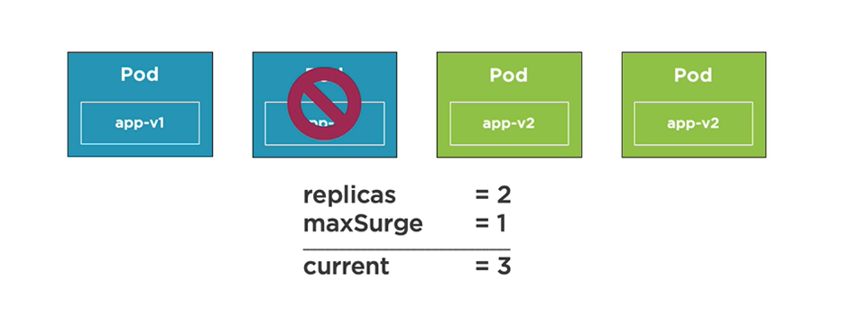
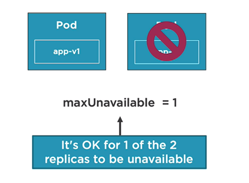
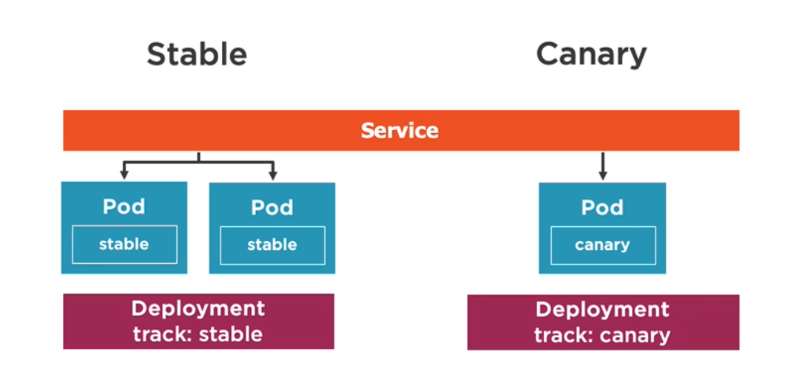
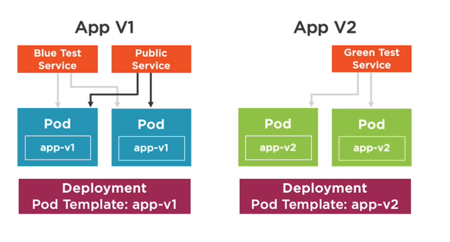
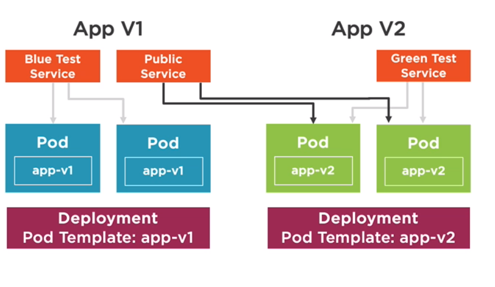
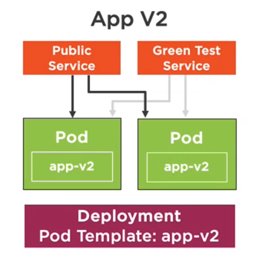

[K8s] 開始學習 Kubernetes - Deployment Strategies
Kubernetes Deployments 功能很強，可以算是部屬中重要的一環，除了設定部屬的 Pod 資訊外，也可以透過他來做更新或退版的事情，以下是相關筆記
Rolling Update Deployments
-
Deployments 內建有兩種更新方式： Rolling Update (Default) 和 Recreate (會有 down-time)
-
spec 區塊
1
2
3
4
5spec:
replicas: 2
minReadySeconds: 1
progressDeadlineSeconds: 60
revisionHistoryLimit: 5replicas: Number of Pod replicasminReadySeconds: Seconds new Pod should be ready to be considered healthy. 預設值: 0 秒progressDeadlineSeconds: Seconds to wait before reporting stalled DeploymentrevisionHistoryLimit: Number ofReplicaSetsthat can be rolled back. 預設值 10
1
2
3
4
5strategy:
type: RollingUpdate
rollingUpdate:
maxSurge: 1
maxUnavailable: 1-
type有兩種設定RollingUpdate或Recreate -
maxSurge: Max Pods can exceed the replicas count，預設值: 25%
-
maxUnavaible: Max Pods that are not operational，預設值: 25%
-
使用
--record會將執行指令記錄在 Deployment revision history 內 -
kubectl rollout status deployment [deployment name]查詢歷史部屬記錄 -
rollout 相關命令
- rollout status: check deployment status
- rollout history deployment [deployment-name]: view history of a Deployment
- rollout undo -f [deployment file]: rollback a deployment
- rollout undo deployment [deployment-name] --to-revision=n : rollback to 某一版
Canary Deployments
-
同一時間有兩個版本在線上，有主要版本跟要測試的版本，透過設定的方式將部分的流量導向測試版本

-
分別有 Stable 和 Canary Deployment，有相同的 lable 但可透過第二個 label 來區分
-
Service 只在乎符合 selector 的項目，所以可透過 Deployment 的 replicas 的數量來決定流量百分比
-
如果測試版本通過測試，就將該版本的 replicas 設定為正式環境要的數量，確定有跑起來後，就將原版本的 Deployment 刪除後，就完成版本的轉換
Blue-Green Deployments
-
新增 V2 版本

-
測試完成後，將 Public Service 切換至 V2 版本

-
移除 App V1

-
需留意的是 Blue/Green 部屬時要留意是否有足夠的 resource 做這件事情
※上面圖片使用皆出自於 Kubernetes for Developers: Deploying Your Code by Dan Wahlin，十分推薦此課程